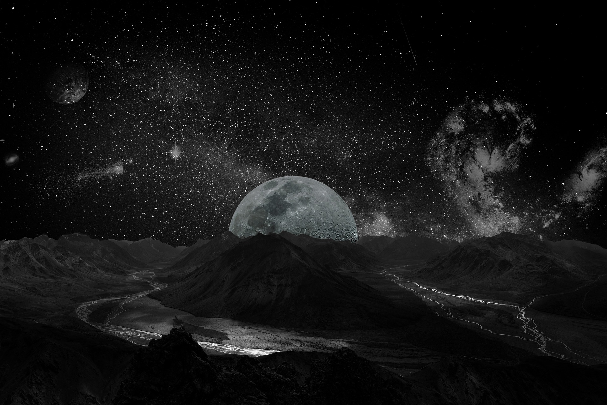

The Qur'an further states that Allah created the sun, the moon, and the planets, each with their own individual courses or orbits. "It is He Who created the night and the day, and the sun and the moon; all (the celestial bodies) swim along, each in its rounded course" (21:33).
